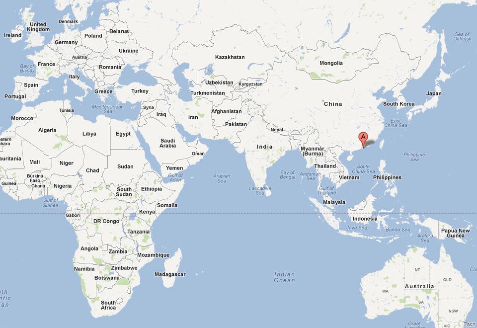

The Economic Effect of Hong Kong 2019-2020 Protest: A Data Science Approach
Hong Kong, as one of the most important financial hubs in the world is well recognized. The 2019-2020 protest that happened there has drawn global attention. Some existing studies have assessed the economic impact right after the protest in 2019, but it has been two years now from the event happening, and little economic study for the last two years has been given. Applying data analytics, this project explores its effect on Hong Kong economy. Since the social unrest event is politically sensitive itself, this project does not take any political stance and avoid sensitive topics to the greatest extent. Its intention is to provide an exploratory economic analysis based on data and statistics.
Having gone through rapid industrialization and obtaining a high volume of investment, Hong Kong developed to a “world city”. Despite the great success in the past decades, Hong Kong is facing great challenges in the years to come, notably economic recession after the protest, damage to the tourism industry, and risk of losing function as an international trade center. Some claim Hong Kong will inevitably lose its bridging role with China as an Asia financial center, while dissenters take an opposite stand that Hong Kong’s function is solid and irreplaceable.
This project aims to answer questions including:
- • What’s the economic cost of the protest?
- • How did public opinion change since 2019?
- • How did financial market react toward the event?
- • How to measure Hong Kong’s economic condition during COVID-19?
This project employs a wide range of quantitative measures to examine Hong Kong economy. Although modern economists and statisticians have provided us with many tools like GDP and employment rate to understand the economy in a quantitative manner, people tend to only quote them in an article, or use a few charts to corroborate their arguments. A big reason is that paper media is not as flexible as digital media. With the development of web technologies, people not only can see the charts, but can also interact with it and form their own opinions from the data. Paper media is good at giving one point of view, a one-dimensional world. This project aims to provide a multi-dimensional data-dashboard experience to include as many relevant data visualizations as possible to explore the economic effect of Hong Kong 2019-2020 protest.
Data science can be defined as a combination of disciplines, i.e., statistics, data mining, data visualization, and analytics for solving various challenges using domain-related datasets. The focus of this project is an intersection of all four domains.
First, this project introduces Hong Kong’s historical economic role. Secondly, it assesses the protest’s effect from perspectives of employment, retail sales, investment, and other economic indicators from both micro and aggregate levels. Thirdly, it will examine how did financial market and investment activities react to the event. Fourth, sentiment and news coverage usually lead to correlated sales and investment, therefor, this project utilizes unsupervised learning to explores how did the sentiment of public opinion and news shift since 2019. And lastly, COVID-19 happened soon after the protest. There is an overlap between the economic effect between Covid-19 and the protest’s effect. This study introduces an approach to isolate the economic effect of the protest from COVID-19.